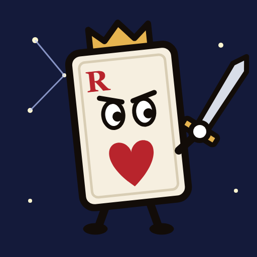
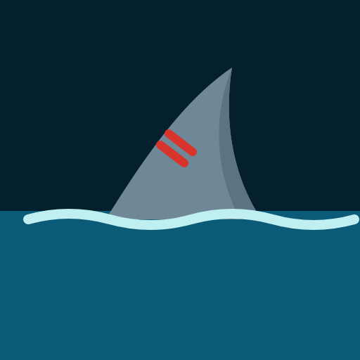
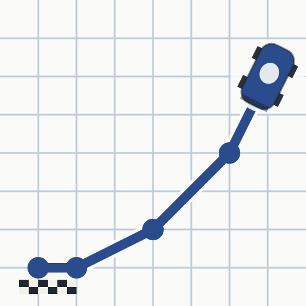
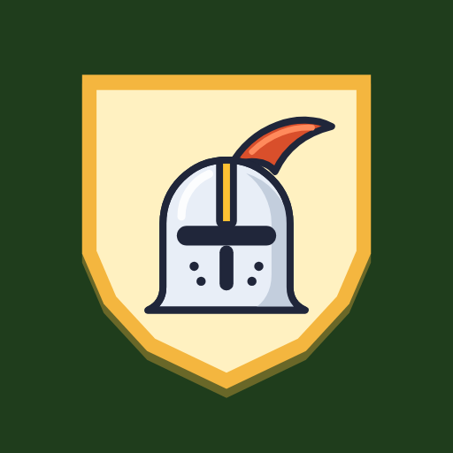
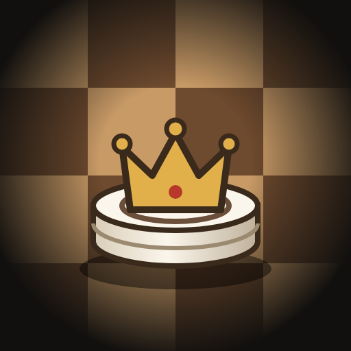

L'écran d'accueil, en trois directions. Mêmes cinq jeux, leurs vraies icônes. En haut, le jeu où tu t'es arrêtée : l'arcade peut lire la partie en cours de chaque jeu. Le nom « Arcade » est provisoire.
Cinq jeux, tous dans le téléphone.


Teeth of the Ocean
Paper Race
Le chevalier
Échecs et DamesReprends La Bataille, mois 5 sur 12.